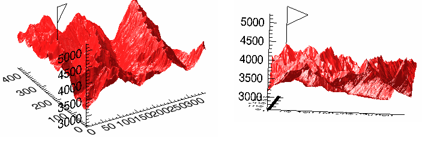

The ARRAY_INDICES function converts one-dimensional subscripts of an array into corresponding multi-dimensional subscripts.
This routine is written in the IDL language. Its source code can be found in the file array_indices.pro in the lib subdirectory of the IDL distribution.
Result = ARRAY_INDICES(Array, Index [, /DIMENSIONS] )
If Index is a scalar, returns a vector containing m dimensional subscripts, where m is the number of dimensions of Array.
If Index is a vector containing n elements, returns an (m x n) array, with each row containing the multi-dimensional subscripts corresponding to that index.
An array of any type, whose dimensions should be used in converting the subscripts. If DIMENSIONS is set then Array should be a vector containing the dimensions.
A scalar or vector containing the one-dimensional subscripts to be converted.
If this keyword is set, then Array is assumed to be a vector containing the dimensions.
Tip: This keyword is useful when you don't have the actual Array, and want to avoid allocating the array just to find the indices.
This example finds the location of the maximum value of a random 10 by 10 array:
seed = 111
array = RANDOMU(seed, 10, 10)
mx = MAX(array, location)
ind = ARRAY_INDICES(array, location)
print, ind, array[ind[0],ind[1]], $
format = '(%"Value at [%d, %d] is %f")'
IDL prints:
Value at [3, 6] is 0.973381
This example is the same as the previous example, but uses the /DIMENSIONS keyword.
seed = 111
array = RANDOMU(seed, 10, 10)
mx = MAX(array, location)
dims = SIZE(array, /DIMENSIONS)
ind = ARRAY_INDICES(dims, location, /DIMENSIONS)
print, ind, array[ind[0],ind[1]], $
format = '(%"Value at [%d, %d] is %f")'
IDL prints:
Value at [3, 6] is 0.973381
This example routine locates the highest point in the example Maroon Bells data set and places a flag at that point.
Enter the following code in the IDL editor:
PRO ExARRAY_INDICES
; Import Maroon Bells data.
file = FILEPATH('surface.dat', $
SUBDIRECTORY = ['examples', 'data'])
data = READ_BINARY(file, DATA_DIMS = [350, 450], $
DATA_TYPE = 2, ENDIAN='little')
; Display data.
ISURFACE, data
; Calculate the value and one-dimensional
; array location of the highest point.
maxValue = MAX(data, maxPoint)
; Using ARRAY_INDICES to convert the one-
; dimensional array location to a two-
; dimensional aray location.
maxLocation = ARRAY_INDICES(data, maxPoint)
; Print the results.
PRINT, 'Highest Point Location: ', maxLocation
PRINT, 'Highest Point Value: ', maxValue
; Create flag for the highest point.
x = maxLocation[0]
y = maxLocation[1]
z = maxValue
xFlag = [x, x, x + 50., x]
yFlag = [y, y, y + 50., y]
zFlag = [z, z + 1000., z + 750., z + 500.]
; Display flag at the highest point.
IPLOT, xFlag, yFlag, zFlag, /OVERPLOT
END
Save the code as ExARRAY_INDICES.pro, compile it and run it. The following figure displays the output of this example:
|
 |
For a better view of the flag, use the Rotate tool to rotate the surface.
|
6.0 |
Introduced |